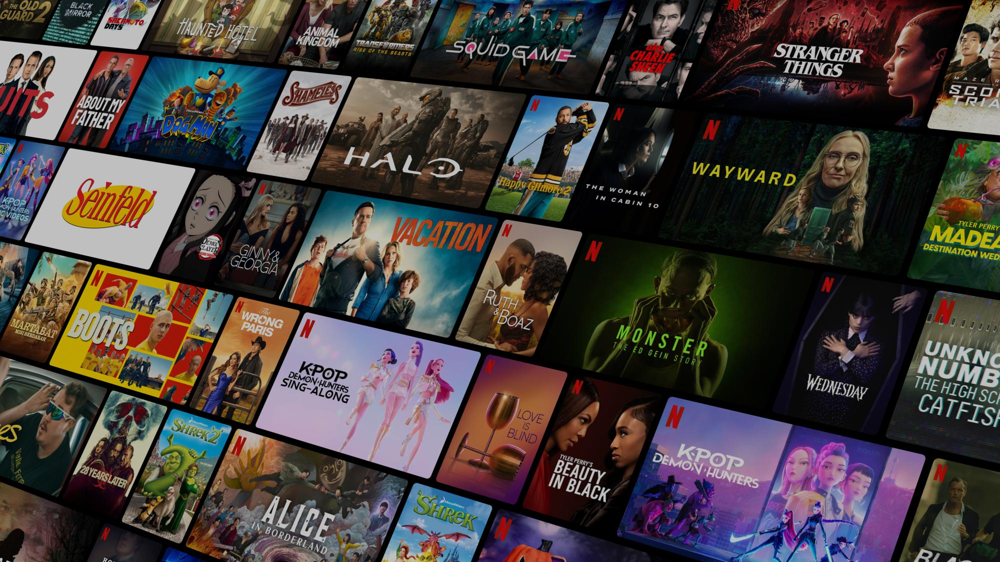

Yakmov - Films HD Gratuits En VF, Doublés Et Sous-titrés
En 2026, Yakmov attire l'attention des internautes qui souhaitent retrouver facilement leurs films préférés, suivre les nouvelles séries et profiter du cinéma en français. Entre les productions hollywoodiennes, les comédies françaises et les thrillers internationaux, les attentes sont simples : un catalogue varié, une navigation rapide et des versions VF ou VOSTFR accessibles sans complications.

Mais à quoi ressemble réellement l'expérience Yakmov ? Comment trouver les nouveautés, identifier les versions françaises et savoir si un film est disponible gratuitement ? Voici les informations essentielles pour mieux comprendre son fonctionnement et profiter du streaming en 2026.
Yakmov : qu'est-ce que cette plateforme de streaming en 2026 ?
Yakmov est un site consacré à la découverte de films et de séries, avec une présentation destinée principalement au public francophone. Son interface rassemble des productions récentes, des œuvres populaires et des titres plus anciens dans un environnement organisé autour du divertissement audiovisuel.
Le site présente des rubriques consacrées aux films, aux séries, aux nouveautés et aux programmes populaires. L'objectif est de faciliter la recherche d'un programme sans devoir connaître à l'avance son diffuseur.
Qu'est-ce qui différencie Yakmov des autres sites de streaming ?
Lorsqu'un internaute recherche yakmov film streaming 2026, il s'intéresse généralement à la simplicité d'utilisation, à la diversité des contenus et aux possibilités de visionnage en français.
Le catalogue rassemble différents univers cinématographiques, depuis les films d'action jusqu'aux comédies romantiques, en passant par les thrillers, la science-fiction et les séries internationales. L'interface francophone et les catégories thématiques permettent de naviguer facilement entre les programmes.
Il existe toutefois une distinction importante entre un titre référencé et un film réellement disponible en lecture. La présence d'une affiche ne garantit ni un visionnage gratuit ni une piste audio française.
À retenir : une expérience de streaming réussie dépend autant de la disponibilité des programmes et des langues proposées que de la richesse du catalogue.
Yakmov film streaming 2026 : quelles nouveautés peut-on retrouver ?
Le cinéma en 2026 continue d'évoluer entre grandes franchises internationales, adaptations, films d'animation et créations françaises. Les passionnés peuvent ainsi passer d'un blockbuster spectaculaire à une œuvre intimiste selon leurs envies.
Les visiteurs peuvent notamment rechercher des productions comme Super Mario Galaxy, le film, Toy Story 5, Projet Dernière Chance, Scream 7 ou Marsupilami. Leur présence dans un catalogue ne confirme cependant pas leur disponibilité en lecture intégrale.
Films d'action en VF : pourquoi ce genre reste-t-il incontournable ?
Un bon film d'action reste une excellente solution après une longue journée. Les internautes qui recherchent yakmov film action VF souhaitent retrouver des productions internationales avec des dialogues français, qu'il s'agisse de thrillers policiers, d'espionnage, de super-héros ou d'aventures spectaculaires.
La version française facilite l'immersion pour les spectateurs qui préfèrent suivre les images plutôt que lire des sous-titres, particulièrement lors des séquences rapides.
Comédie française : pourquoi plaît-elle autant aux spectateurs ?
La comédie française parle directement au quotidien de son public. Les situations familiales improbables, les maladresses amoureuses et les différences générationnelles créent une proximité appréciée des spectateurs.
Les recherches comme yakmov comédie française ou film en français gratuit traduisent cet intérêt pour des œuvres dont les dialogues, les expressions familières et les références culturelles sont immédiatement compréhensibles.
Yakmov propose-t-il aussi des séries américaines en VF ?
Le catalogue référence différentes séries internationales comme The Boys, Reacher, Stranger Things, Breaking Bad et The Rookie. Ces programmes illustrent la diversité des genres recherchés par les amateurs de séries américaines.
La présence d'une série ne confirme toutefois pas que toutes ses saisons, tous ses épisodes ou sa version doublée soient accessibles. Les disponibilités dépendent des services de diffusion.
Films VF et VOSTFR : comment choisir la meilleure expérience ?
Certains spectateurs privilégient le confort d'un doublage français. D'autres souhaitent entendre les voix originales des acteurs et retrouver les nuances de leurs interprétations. Le choix entre VF et VOSTFR dépend donc avant tout des préférences personnelles.
Quelle différence existe-t-il entre VF et VOSTFR ?
La VF correspond généralement à une œuvre doublée en français, tandis que la VOSTFR conserve les dialogues originaux avec des sous-titres français.
| Critère | VF | VOSTFR |
|---|---|---|
| Dialogues | Français | Langue originale |
| Sous-titres | Facultatifs | Français |
| Voix originales | Généralement remplacées | Conservées |
| Confort | Sans lecture nécessaire | Lecture régulière |
| Principal avantage | Visionnage détendu | Interprétation d'origine |
Une soirée entre amis peut favoriser la VF, tandis qu'un thriller britannique regardé seul peut devenir plus immersif en VOSTFR grâce aux accents et aux intonations des acteurs.
Yakmov permet-il de passer de VF à VOSTFR ?
La disponibilité des versions audio et des sous-titres doit être vérifiée pour chaque programme. Lorsqu'un lecteur propose plusieurs pistes, le changement s'effectue généralement dans ses paramètres audio.
Il ne faut cependant pas supposer que chaque titre référencé sur Yakmov possède automatiquement les deux versions.
Comment fonctionne Yakmov et comment rechercher un film ?
Un catalogue bien organisé permet de retrouver rapidement une œuvre, même lorsque l'on ne connaît que quelques mots de son titre. La navigation commence généralement depuis la page d'accueil, qui présente différentes catégories de films et de séries.
La recherche permet ensuite de retrouver un programme précis. Sa fiche peut afficher un synopsis, l'année de sortie, le genre et différentes informations utiles. Il convient alors de vérifier quel service propose réellement le visionnage.
Certaines fiches peuvent orienter vers des fournisseurs externes. La navigation observée ne correspond donc pas nécessairement à un lecteur vidéo gratuit directement intégré à Yakmov.
Comment retrouver rapidement un film sur Yakmov ?
Utiliser le titre exact reste la méthode la plus efficace. Pour une production internationale, essayer le titre français et le titre original peut faciliter la recherche. Le genre, l'année de sortie ou le nom d'un acteur peuvent également aider à retrouver une œuvre oubliée.
Faut-il obligatoirement créer un compte ?
La consultation des catalogues publics peut se faire sans compte lorsque le site autorise la navigation libre. En revanche, le fournisseur chargé du visionnage peut demander une inscription, un abonnement ou une location.
Faut-il télécharger un logiciel pour regarder les films ?
Le streaming moderne fonctionne généralement directement depuis un navigateur compatible. Une demande inhabituelle d'installation provenant d'une publicité ou d'une redirection doit être considérée avec prudence.
Yakmov est-il gratuit en 2026 ?
C'est une question essentielle pour les internautes qui recherchent yakmov film streaming VF gratuit ou yakmov films gratuit.
La consultation du catalogue Yakmov est accessible publiquement, mais la gratuité de tous les films et séries en lecture intégrale n'est pas établie.
Un site peut présenter de nombreuses références tout en orientant vers des fournisseurs proposant différentes conditions d'accès. Certains programmes sont financés par la publicité, tandis que d'autres nécessitent un abonnement ou une location.
Pourquoi certains films sont-ils gratuits et d'autres payants ?
Les modèles économiques du streaming varient selon les fournisseurs. Certains financent leurs catalogues grâce à la publicité, tandis que d'autres privilégient les abonnements mensuels. Les productions récentes peuvent également être proposées en location avant de rejoindre des catalogues accessibles autrement.
Pourquoi un titre affiché peut-il être indisponible ?
Un film peut rester référencé alors que son offre de visionnage a changé ou que sa diffusion n'est pas accessible dans votre région. Les périodes d'exclusivité et la disponibilité des versions linguistiques influencent également les catalogues.
Quelle qualité vidéo rechercher pour une expérience cinéma réussie ?
La qualité visuelle reste déterminante, particulièrement sur les téléviseurs de grande taille. Une image floue ou des dialogues désynchronisés peuvent rapidement gâcher un film, même lorsque son histoire est passionnante.
HD, Full HD ou 4K : quelles différences ?
La résolution détermine le nombre de pixels composant l'image. Une définition supérieure peut offrir davantage de détails, mais la compression et la qualité de la source jouent également un rôle important.
| Résolution | Définition | Usage recommandé |
|---|---|---|
| HD 720p | 1280 × 720 | Petit écran |
| Full HD 1080p | 1920 × 1080 | Ordinateur et télévision |
| 4K UHD | 3840 × 2160 | Grand écran compatible |
Une vidéo annoncée en 1080p n'offre pas nécessairement une meilleure image qu'un fichier 720p correctement encodé. La disponibilité de ces résolutions sur Yakmov n'est pas confirmée pour tous les titres.
Comment améliorer la fluidité du streaming ?
Une connexion stable reste essentielle. Utiliser un Wi-Fi suffisamment puissant, limiter les téléchargements simultanés et adapter la résolution au débit disponible permettent de réduire les interruptions.
Un navigateur récent et un appareil correctement mis à jour contribuent également à améliorer le confort de visionnage.
Yakmov sur mobile, Smart TV et Chromecast : quelles possibilités ?
Le cinéma ne se regarde plus uniquement devant un ordinateur. Les utilisateurs souhaitent désormais accéder à leurs programmes depuis un smartphone, une tablette ou un téléviseur connecté.
Peut-on utiliser Yakmov sur iPhone et Android ?
Le site peut être consulté depuis un navigateur mobile compatible. Cela ne garantit cependant pas que chaque vidéo provenant d'un fournisseur externe fonctionne sur iOS ou Android. La compatibilité dépend du lecteur et du format vidéo.
Yakmov fonctionne-t-il avec Chromecast ?
La compatibilité Chromecast n'est pas confirmée comme fonctionnalité native de Yakmov. Lorsqu'un fournisseur propose Google Cast, la diffusion vers un téléviseur compatible peut être possible selon les paramètres du service.
Peut-on regarder Yakmov sur une Smart TV ?
La consultation dépend du navigateur intégré à la télévision. Pour le visionnage, il est préférable de vérifier si le fournisseur final possède une application compatible avec l'appareil.
Existe-t-il une application officielle Yakmov ?
Aucune application mobile officielle authentifiée n'a pu être confirmée. Il est donc préférable d'éviter les fichiers APK ou logiciels présentés comme des applications Yakmov sans preuve de leur origine.
Yakmov avis 2026 : comment évaluer l'expérience utilisateur ?
Les commentaires les plus utiles sur une plateforme ne sont pas nécessairement les plus enthousiastes. Ils expliquent ce qui fonctionne, sur quel appareil et dans quelles conditions.
Une bonne expérience dépend de la pertinence du catalogue, de la facilité de navigation, de la clarté des conditions d'accès et des options linguistiques. Les visiteurs doivent pouvoir comprendre rapidement où et comment regarder un programme.
Pourquoi la simplicité peut-elle compter davantage que la quantité ?
Imaginez deux plateformes. La première présente des milliers de titres, mais nécessite plusieurs recherches pour identifier leur disponibilité. La seconde propose moins de références, mais affiche immédiatement les informations essentielles.
Une information fiable et compréhensible vaut souvent davantage qu'un catalogue impressionnant, mais difficile à exploiter.
Un bon parcours utilisateur permet de passer d'une envie de cinéma à une décision éclairée sans confusion sur la disponibilité du film. — Camille Laurent, personnage fictif illustrant le point de vue d'une consultante en expérience numérique.
Quelles améliorations rendraient Yakmov encore plus intéressant ?
Des filtres VF et VOSTFR, une indication claire des fournisseurs et une meilleure visibilité des conditions de visionnage pourraient simplifier considérablement l'expérience. Des recommandations personnalisées et des listes de films favoris représenteraient également des améliorations intéressantes.
Yakmov est-il sûr ? Les précautions essentielles en 2026
La sécurité fait partie intégrante de l'expérience de streaming. Un catalogue attractif ne suffit pas si l'utilisateur ne peut pas identifier clairement le service consulté et les informations personnelles demandées.
Comment reconnaître un environnement fiable ?
Avant d'utiliser un site, vérifiez attentivement son domaine et la présence d'une connexion HTTPS. Évitez les publicités demandant l'installation de logiciels inconnus et les formulaires sollicitant des coordonnées bancaires sans explication.
Il est également préférable de refuser les notifications inutiles et de conserver un navigateur régulièrement mis à jour.
La confiance numérique repose sur une règle très simple : l'utilisateur doit toujours comprendre ce qu'il ouvre, ce qu'il accepte et ce qu'il paie. — Julien Moreau, personnage fictif illustrant le point de vue d'un analyste en sécurité numérique.
Pourquoi faut-il se méfier des nouvelles adresses Yakmov ?
Les recherches yakmov nouvelle adresse, yakmov site officiel ou yakmov accueil sont fréquentes lorsqu'un visiteur souhaite retrouver une page connue.
Un domaine ressemblant à celui d'un site populaire peut toutefois appartenir à un opérateur différent. La similarité du nom, du logo ou de l'interface ne constitue pas une preuve d'authenticité.
Pourquoi certains visiteurs rencontrent-ils des redirections inattendues ?
Les redirections peuvent provenir de services externes ou de mécanismes publicitaires. Lorsqu'une page s'ouvre sans rapport avec le programme recherché, mieux vaut revenir à la page précédente sans communiquer d'informations personnelles.
Quelles sont les meilleures alternatives à Yakmov en 2026 ?
Comparer plusieurs services permet de retrouver une œuvre précise, d'identifier ses versions linguistiques ou de choisir une offre adaptée à son budget. En France, ARTE.tv, France.tv, Pluto TV, Netflix et Prime Video proposent des expériences différentes.
| Plateforme | Type d'accès | Principal intérêt |
|---|---|---|
| ARTE.tv | Gratuit | Cinéma et documentaires |
| France.tv | Gratuit selon les programmes | Fictions françaises et replay |
| Pluto TV | Gratuit avec publicité | Chaînes et vidéo à la demande |
| Netflix | Abonnement | Films et séries originales |
| Prime Video | Abonnement ou paiement selon le titre | Catalogue international |
Les catalogues et les tarifs évoluent régulièrement. Il est donc préférable de vérifier la disponibilité d'un film avant de choisir une plateforme.
Comment choisir une alternative adaptée à ses habitudes ?
Pour une soirée documentaire, ARTE.tv peut répondre aux attentes. France.tv convient notamment aux amateurs de programmes français, tandis que les services internationaux sur abonnement offrent d'autres possibilités pour les séries et les films.
La meilleure plateforme n'est pas celle qui possède théoriquement le plus de contenus, mais celle qui correspond réellement aux envies de son public. — Sophie Bernard, personnage fictif illustrant le point de vue d'une spécialiste des usages audiovisuels.
Quels sont les nouveaux horizons du streaming français après 2026 ?
Le streaming évolue vers une expérience plus personnalisée, transparente et adaptée aux différents appareils. Les spectateurs veulent retrouver rapidement des programmes correspondant à leurs goûts, sans passer trop de temps à rechercher leur disponibilité.
Des recommandations plus proches des goûts personnels
Les systèmes de recommandation peuvent exploiter les préférences déclarées et les genres favoris pour faciliter la découverte. Un amateur de thrillers français ne recherche pas nécessairement les mêmes programmes qu'une famille préparant une soirée cinéma.
Une meilleure visibilité des versions françaises
Une indication claire des pistes VF, VOSTFR, des sous-titres et de l'audiodescription améliorerait l'accessibilité. Ces informations deviennent particulièrement importantes lorsque les programmes circulent entre plusieurs services de diffusion.
La recherche de films devient plus conversationnelle
Les internautes ne recherchent plus seulement un titre précis. Ils posent des questions naturelles sur les comédies familiales, les séries américaines sous-titrées ou les nouveaux films d'action disponibles en français.
Cette évolution encourage les plateformes à organiser leurs informations autour des besoins concrets des spectateurs plutôt qu'autour des seules affiches de films.
Comment Yakmov pourrait-il évoluer dans les prochaines années ?
Une meilleure présentation des disponibilités, des langues et des conditions de visionnage pourrait enrichir l'expérience. Une navigation mobile optimisée et des suggestions adaptées aux préférences des visiteurs représenteraient également des perspectives intéressantes.
Conclusion : Yakmov et le streaming en français en 2026
Yakmov s'inscrit dans l'univers des sites consacrés à la recherche de films, de séries et de nouveautés pour le public francophone. Son catalogue présente des productions récentes et des classiques dans des rubriques facilitant la découverte.
Pour profiter d'une bonne expérience, l'essentiel reste de vérifier la disponibilité des programmes, les versions VF et VOSTFR, la qualité vidéo et les conditions d'accès.
Que vous recherchiez une comédie française, un blockbuster ou une nouvelle série américaine, Yakmov peut constituer un point de départ intéressant pour explorer le cinéma. Une information claire et une navigation agréable rendent chaque nouvelle découverte plus simple.
FAQ : les questions fréquentes sur Yakmov
Quelle est l'adresse URL de Yakmov en 2026 ?
L'adresse publique identifiée en 2026 est www.yakmov.fr. Le site présente des films, des séries et des nouveautés. Vérifiez toujours le domaine avant de consulter une page présentée comme officielle.
Yakmov permet-il de regarder des films gratuitement ?
Le catalogue est consultable publiquement, mais cela ne garantit pas la lecture gratuite de chaque œuvre. Certaines fiches peuvent orienter vers des fournisseurs externes dont les conditions varient selon le programme.
Yakmov propose-t-il des films en VF et VOSTFR ?
Yakmov référence des productions françaises et internationales. La disponibilité des versions VF et VOSTFR dépend toutefois du programme et du service assurant effectivement sa diffusion.
Peut-on trouver des films et des séries sortis en 2026 ?
Le catalogue affiche des productions datées de 2026 dans ses rubriques consacrées aux nouveautés. Leur référencement ne garantit cependant pas leur disponibilité immédiate en visionnage intégral.
Yakmov fonctionne-t-il sur téléphone et tablette ?
Le site peut être consulté depuis un navigateur mobile compatible. Les possibilités de lecture dépendent des fournisseurs vidéo, des appareils utilisés et des éventuelles restrictions géographiques.
Que faire si Yakmov ne fonctionne plus ?
Vérifiez l'adresse, la connexion internet et le navigateur. Évitez les domaines imitateurs et les téléchargements suspects. Vous pouvez également rechercher le programme auprès d'autres plateformes de diffusion.
Quelle est la meilleure alternative gratuite à Yakmov ?
ARTE.tv, France.tv et Pluto TV proposent des catalogues accessibles sans abonnement selon les programmes. Le meilleur choix dépend des films recherchés, des langues disponibles et de vos habitudes de visionnage.